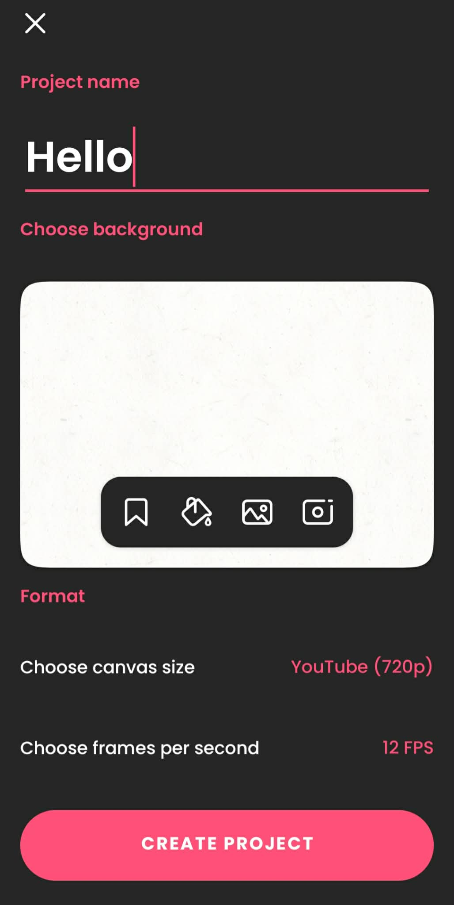
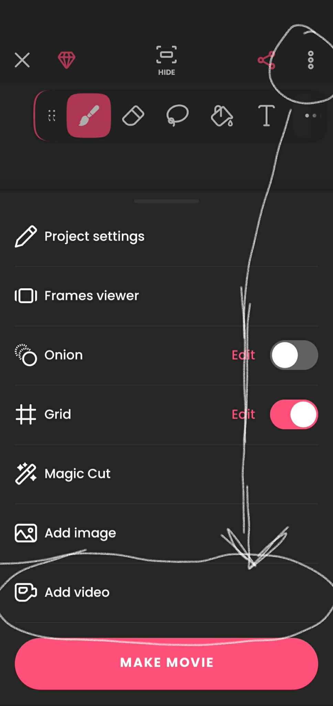
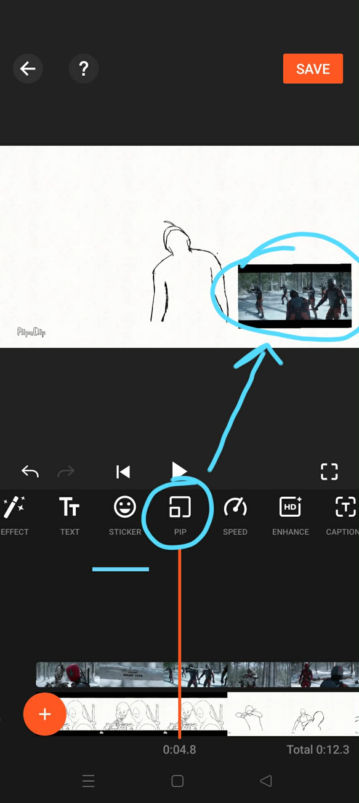

Rotoscoping Animation
The art of rotoscoping involves tracing over live-action footage frame by frame to create realistic animation. This is the rotoscoping project using a scene from the film Deadpool & Wolverine, which features the song “Bye Bye Bye” by NSYNC.
Final Output
Reference Video
Referenced portion of the video is from 0:56 to 1:59
Additional reference videos:
https://www.youtube.com/watch?v=NQnWphgaMWY (Gabriel penalty miss in the background)
https://www.youtube.com/watch?v=dQw4w9WgXcQ(Rick Astley music video)
Disclaimer
This rotoscope animation project uses a selected scene from Deadpool & Wolverine, which includes the song “Bye Bye Bye,” solely as a visual and audio reference for study and artistic interpretation. The original video footage, characters, music, and all related intellectual property are owned by their respective copyright holders, including the film’s producers and the creators and rights holders of the song.
This work is created strictly for educational and non-commercial purposes and does not intend to infringe upon or claim ownership of any copyrighted material. All rights to the original content remain with their respective owners.
This project is an independent reinterpretation and is not affiliated with, endorsed by, or sponsored by the creators, producers, or rights holders of Deadpool & Wolverine and the song “Bye Bye Bye.”
Step by Step Procedure
Tools & Apps Used:
- Flipaclip App
- YouCut - Video Editor App
- Capcut - Video Editing App

- Download reference video as MP4 or any video file.
- Download Flipaclip App.
- Create a "Project" in Flipaclip set to 30 FPS (Frames Per Second).

- Press the 3 dot button and click Add Video and choose your reference video.

- Trace each frame that is imported.
- After tracing each frame, download your created animation and download YouCut.
- Use YouCut/Capcut to edit the animation video, add a Picture-in-Picture (PIP) of your reference video on top of your animation video.

- Make sure to time your reference video with your animation video and you're done!